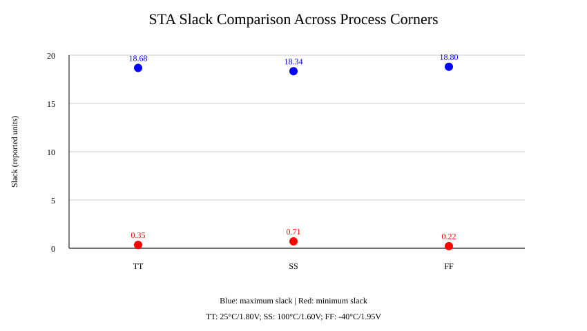

Using Verilog HDL: RTL Design, Simulation and Static Timing Analysis
Technology: SKY130 PDK
Project Report
Submitted by: __________________________
Department: _____________________________
Institution: _____________________________
Academic Year: __________________________
This project presents a password-based digital door lock designed using Verilog Hardware Description Language (HDL). The system checks a serial password entered by a user and controls an unlock output according to the received sequence. A correct password, 1011, is accepted, while an incorrect sequence such as 1001 is rejected. The design is verified through simulation and synthesized into a gate-level representation. Static Timing Analysis (STA) is performed using timing libraries associated with the SKY130 process design kit (PDK), considering typical, slow and fast operating corners. The project demonstrates key stages of a digital VLSI workflow, from RTL design and functional verification to synthesis and timing evaluation.
Digital access-control systems compare an entered code with a predefined password before allowing access. Implementing the control logic in Verilog provides a practical introduction to sequential digital design, finite-state behaviour, simulation, synthesis and timing analysis. This project focuses on a compact password-controlled lock suitable for educational demonstration.
| Test case | Input password | Expected behaviour | Recorded outcome |
|---|---|---|---|
| Valid password | 1011 | Unlock accepted | Simulation passed |
| Invalid password | 1001 | Access rejected | Simulation passed |
The testbench and generated VCD waveform are retained in the project repository. The results above reflect the recorded simulation tests; they do not constitute a security assessment of a production door-lock system.
The RTL was synthesized into a mapped Verilog representation. STA was performed using the available corner-specific timing libraries and scripts. Slack values below are copied from the existing project logs; units and the exact timing constraints should be confirmed from the original reports before making sign-off claims.
| Timing corner | Maximum slack (reported) | Minimum slack (reported) |
|---|---|---|
| TT, 25°C, 1.80 V | 18.68 | 0.35 |
| SS, 100°C, 1.60 V | 18.34 | 0.71 |
| FF, −40°C, 1.95 V | 18.80 | 0.22 |
The graph compares the reported maximum and minimum slack across the three corners.

Note: slack units are not specified here. Positive slack in the listed summaries is encouraging, but complete timing sign-off requires reviewing all relevant setup/hold paths, constraints, unconstrained paths and the full reports.
Functional simulation passed for the recorded valid and invalid password cases. Synthesis and three-corner STA reports are available. The available project notes previously identified an LVS mismatch involving the VGND and VPWR nets; therefore, this report does not claim that LVS passed. The final GDSII output and complete physical-design sign-off status must be verified against the actual run artifacts before submission.
The project demonstrates the implementation and verification of a password-controlled digital lock using Verilog HDL. Simulation confirms the tested password cases, while synthesis and corner-based STA provide experience with the transition from RTL to implementation-oriented analysis. Further work should include resolving any remaining LVS issues, checking the final physical-design artifacts, and documenting the complete timing constraints and sign-off results.